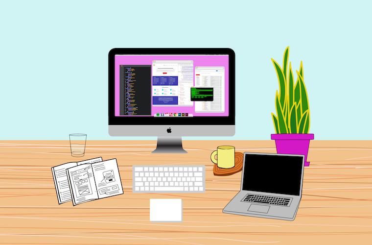

How it All started
I didn’t want to be a full-time freelancer.
I had a full-time agency job working as a designer & developer. I made websites everyday, and I loved it. It felt powerful to find what I loved to do.
Although I was only 23 years old, everyone at the office respected the work I did and wanted to know what I thought about things. In my first year after college, at my first job, I made over a dozen websites, from design to development.
However, I didn’t have a portfolio site, a blog or a twitter account. I kept my head low and churned out the work.
I saved up money little by little, and one year into my job I decided it was time to buy a car. I needed to buy a car. My old car couldn’t drive more than four miles without stalling out.
I took all the money out of my savings and checking account and bought a used Toyota Camry. It wasn’t much, but it took my year of saving down to $4 in my checking account.
I saw how little money I had, and thought “time to do freelancing on the side”.
Where I worked, I was technically paid as a contractor (not as an employee) which saved tax money for the owner. This meant I could pursue freelancing while keeping my full-time (contract) job.
I put together a portfolio website and told the world I was available for freelance. My plan was to do a few freelancing projects to replenish my savings, but I didn’t think I had the skills or the network to go full-time freelancing.
Two days after I went live with my portfolio website, I lost my job. I’m not going to go into details about losing my job here, but I was devastated and shocked.
My first thought was, “I need to get a new job”. That’s the typical thought someone has after they lose their job. I need someone to hire me. I updated my LinkedIn. I drafted a new resume.
I gave my resume to my dad to proofread, and he said, “Why do you need me to read your resume? You already have a job.”
“Dad, I don’t have a job anymore,” I said. “I lost it.”
“No,” my dad said, “your freelancing is your job now. It’s your business.”
“I only meant to do freelancing on the side. It can’t be my full-time job.”
“Why not?” my dad replied. “You don’t have much money, but you also don’t have much debt. You don’t have kids. Your expenses are low. Also you have a good skill. Do you really want to work for the man again? Do you really want to work for a man again?”
And in that moment I began my full-time freelance business. I had $4 to my name and no clients.
The First Month: Door to Door Website Saleswoman
The first month of full-time freelancing was scary. A roller coaster of emotions. I needed to pay rent and buy food. There was no paycheck coming.
Get Your Name Online
I created a profile for my business on every social media platform imaginable. Facebook, Twitter, Instagram, Behance, Linkedin, Github and Medium. I added my business to Google Maps. I started a blog. People needed to know that I made websites and I was available for hire.
Get Clients Now
I had no real experience getting clients. When I was working at an agency, I was the girl making websites behind the scenes.
To start, I made a list of every business in Athens & Oconee County that either didn’t have a website or their website needed to be updated.
Then I literally went door to door, to each business, and tried to win clients. I was a door to door website saleswoman. Being out of my comfort zone was an understatement.
Most people took my business card and wished me luck. A few wouldn’t even shake my hand and glowered at me until I left their store.
But then I walked into Avid Bookshop.
When I said I made websites, they immediately responded: “We need a new one.”
They were my first client as a full-time freelancer, and still a cherished client today.
Months 2-6: (Hardly) Making it
For the next five months, I made it. In the sense that I didn’t go homeless or starve. And here’s how I did it.
Live Lean
- I paid the minimum on all my credit cards
- I ate egg sandwiches and pbjs.
- I stopped going out.
- I didn’t buy a single article of clothing.
- I cancelled all superfluous subscriptions or memberships
- I didn’t travel.
- I didn’t get haircuts, buy makeup or hair products. Live tenaciously for your business. My business was my every waking thought. My desire to dress well, go out or be cool was replaced by my desire to see my business succeed.
My goal was to deliver excellent work to the few clients I had, in hopes of getting more work through referrals. It worked. Slowly but surely.
Take 30% out of Every Check for Taxes. And raise your rates to accommodate that.
When a freelancer gets paid it’s not a paycheck. No taxes are taken out. It is your responsibility to save for taxes. And as a freelancer you pay, on average, 10% more than your employed friends in taxes. It sucks but at least you are your own boss!
That $1000 check is really $700. That $1500 check is really $1050. That $500 check is really $350 For my first few months freelancing, I didn’t do the tax math when providing quotes to clients and it hurt me. When I finally got paid for my work, I needed every penny for rent, bills, etc. And then 30% would be taken out. That made getting by only tougher. I had to raise my rates to a point where even with 30% taken out, I could support myself and have a quality life.
As a freelancer, you will work longer & harder than you ever did at a regular job (but it’s worth it)
I was surprised by how running my solo-business took over my life. It changed my core personality.
At 23, working an agency job, I went out on weekends. I was concerned about who and what was cool. I’d leave my job and not think about work until I returned the next morning.
At 24, running my own business, I stopped going out because a) I initially couldn’t afford it and b) there were more important things to do — work.
The business-side of being a freelancer was the unexpected part-time job I added to my full-time job of website design & development. As a freelancer you are in charge of sending proposals and invoices, creating contracts, emailing clients & marketing yourself to get future work. That takes up a good part of your day-to-day operations.
Why is the hard work worth it?
Because you are in charge of your life. There is no boss that decides your salary, and then won’t consider giving you a raise for another year, maybe two years, maybe three years. I asked for a raise three times, and I got shot down every time.
After freelancing for a year, I am making 4.5x times the hourly rate I made at my last agency job. The hard work is also worth it because you own your schedule because you own your life. My typical day is working from 8am - 2pm and then 9pm - 12am because those are the times I’m most productive. I can’t be productive from 9 to 5, and I don’t think many people can.
I take breaks and vacation when I want because opportunities to be with family and friends are always worth it.
Beyond the pay and schedule, being a business owner is empowering (even with the long hours and inconsistent cashflow). I can truly say that I love what I do and I love the clients I work with.
Up Next: My First Year Freelancing: What I’ve Learned Pt. 2.
Part two will be published next week in my “First Year Full-Time Freelancing” series. In part two I’ll cover months 6-12 when I start to get steady clients and steady money. I’ll discuss how I manage the workload, how I tackle content marketing and how I start to focus my business on clients and projects that I’m the most passionate about.
Follow me on Facebook, Twitter and Instagram to get updates on my latest blog posts!